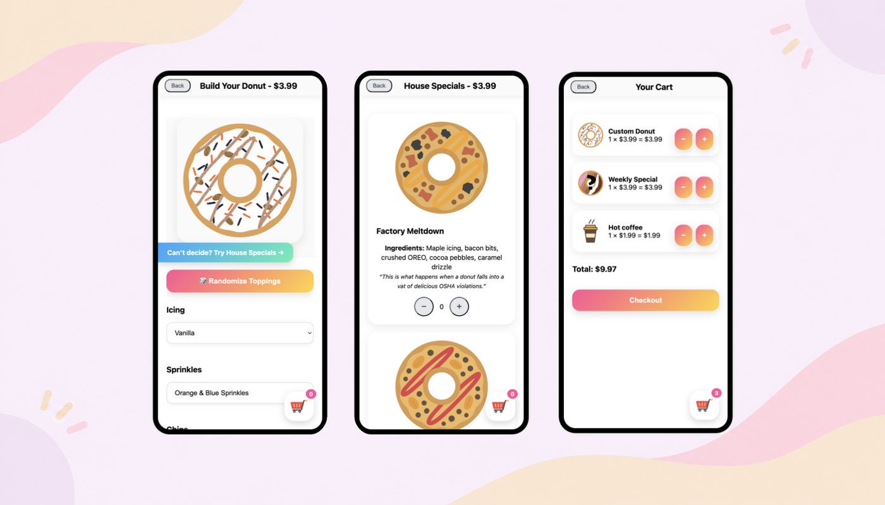
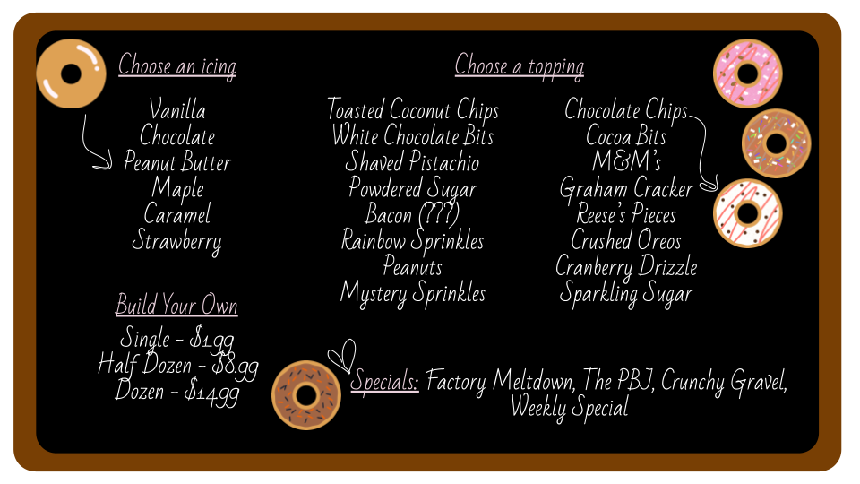
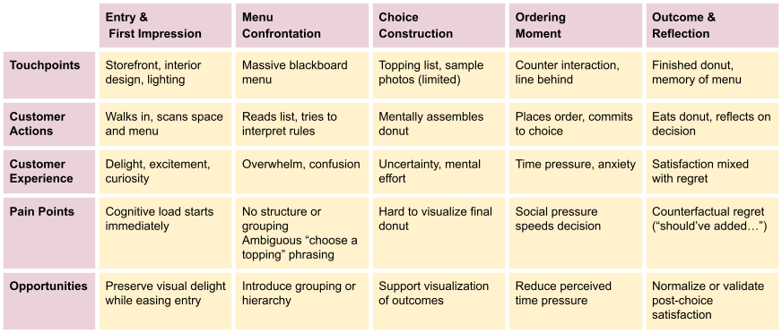
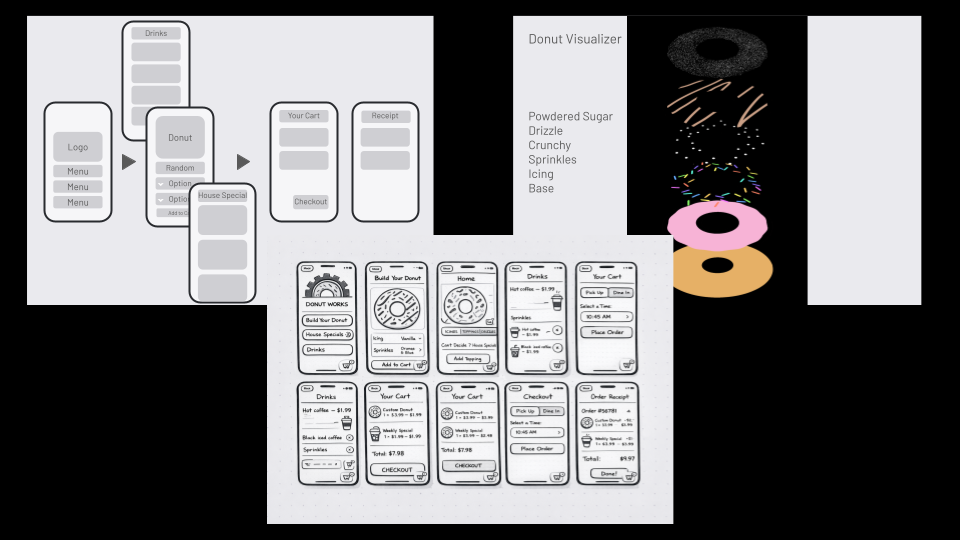
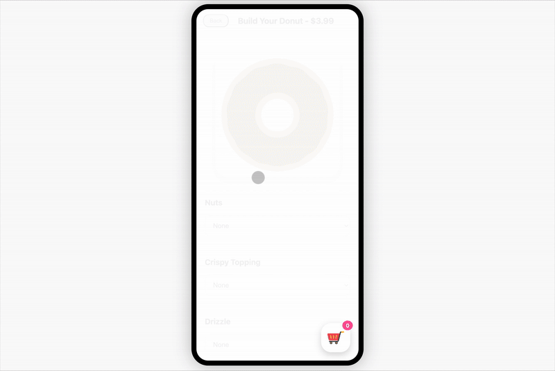
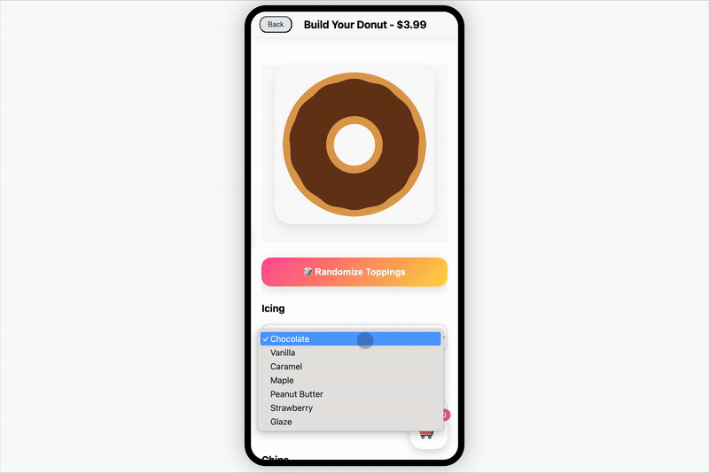
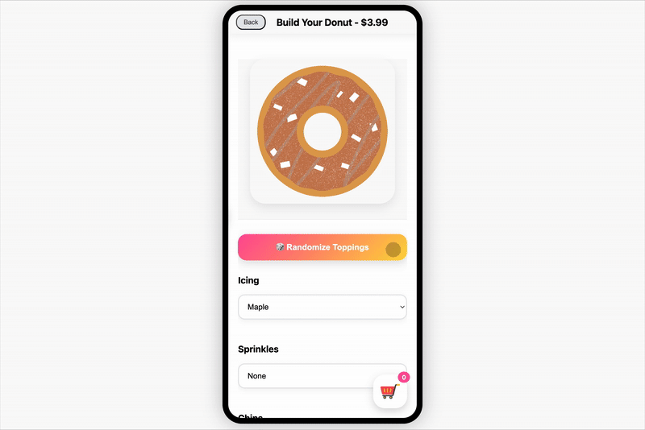
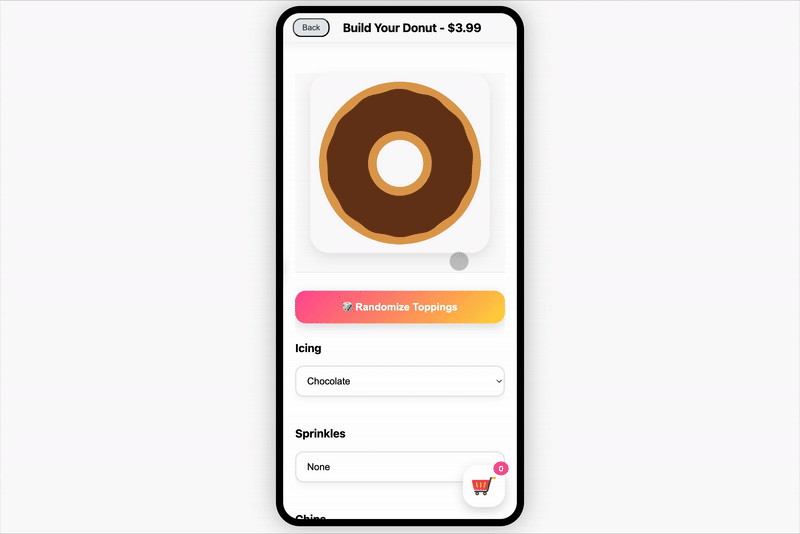
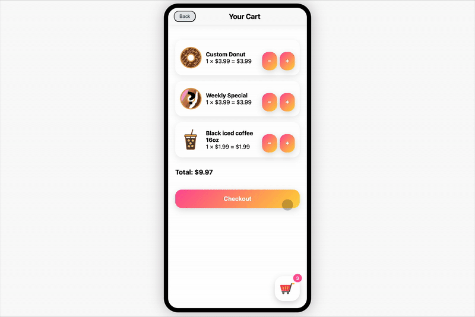

Case study
Donut Shop Ordering App
How might we reduce choice paralysis in a highly customizable ordering experience without taking away the flexibility customers enjoyed?

At a Glance
- Turned a vague business concern — “the menu is overwhelming” — into specific UX failure modes
- Prioritized three high-leverage interventions: structure the choices, visualize outcomes, and provide low-effort fallbacks
- Designed and built a functional MVP rather than stopping at wireframes
- Validated the MVP in-context with 12 customers, observing less confusion, fewer staff clarification needs, and strong engagement with curated recommendations
The Product Problem
The shop's build-your-own donut bar was popular because customers had dozens of options. But those options were presented on one large chalkboard with little hierarchy or guidance. Customers hesitated, asked staff to explain the rules, revised orders midstream, and often struggled to imagine the final result.
The challenge was not to reduce customization. It was to make a complex decision feel manageable while preserving the sense of choice and fun that made the experience appealing in the first place.

What I Observed
- Choice overload: customers had to scan too many options at once
- Unclear rules: people were unsure how many selections they could make
- Low confidence: customers could not visualize the finished donut before ordering
- Staff dependency: confusion frequently turned into clarification questions and order revisions
I mapped these behaviors into a simple journey to distinguish where the experience was genuinely delightful from where unnecessary decision work was slowing people down.

My Design Strategy
I treated the menu as a decision system rather than a catalog. Instead of asking users to process every option at once, I focused on reducing the amount of uncertainty attached to each step.
I prioritized three interventions that were feasible for a small business: progressive choice structure, immediate visual feedback, and optional escape hatches for moments of decision fatigue.

Key Product Decisions
1. Break One Big Decision Into Smaller Ones
I grouped toppings into clear categories and asked users to make one small decision at a time. Each category allowed one selection or none, creating useful boundaries without removing customization.

Why: the original menu required users to understand the entire choice space before acting. Progressive disclosure reduced that upfront cognitive burden.
2. Make the Consequence of Each Choice Visible
The donut updated in real time as users selected icing, toppings, and drizzles. Layered visual assets turned an abstract set of menu choices into immediate feedback.

Why: customers no longer had to mentally simulate the final product, reducing uncertainty and making it easier to commit to a choice.
3. Design for the Moment Users Do Not Want to Decide
I added two fallback paths: a Randomizer for users who wanted surprise and curated House Specials for users who wanted an easier decision without giving up the experience entirely.


Why: I wanted the system to support decision fatigue rather than punish it. The fallback options let users keep moving without forcing a default on everyone.
From Prototype to End-to-End Flow
I built the experience beyond the customization screen so I could evaluate the complete ordering journey. Cart, checkout, and confirmation were intentionally lightweight, with clear progress feedback and small moments of delight that did not add extra decisions.

Building the MVP myself also let me test what was technically realistic before recommending a more expensive production implementation.
Validation in the Real Ordering Environment
I conducted in-context usability testing with 12 customers, observing how they moved through customization, recommendations, and checkout. I focused on the behaviors that had surfaced during my initial research: hesitation, confusion about ordering rules, dependence on staff, and difficulty committing to a choice.
The results showed a clear improvement in the ordering experience:
- Customers moved through customization with noticeably less confusion and required fewer clarification questions from employees.
- The step-by-step structure helped customers understand the rules of customization without reducing the range of choices available to them.
- Curated recommendations and House Specials were especially well received, giving customers an easy path forward when they did not want to make every decision themselves.
- Real-time visual feedback helped customers understand the outcome of their choices and commit more confidently to their selections.
Across the 12 sessions, the same friction points had become far less prominent. Customers were able to navigate the experience more independently, while still engaging with the flexibility and playfulness of customization.
Explore the fully interactive prototype here .